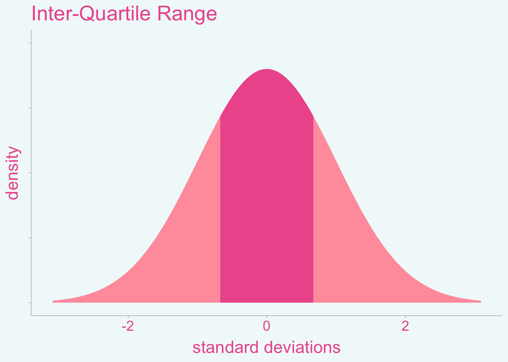
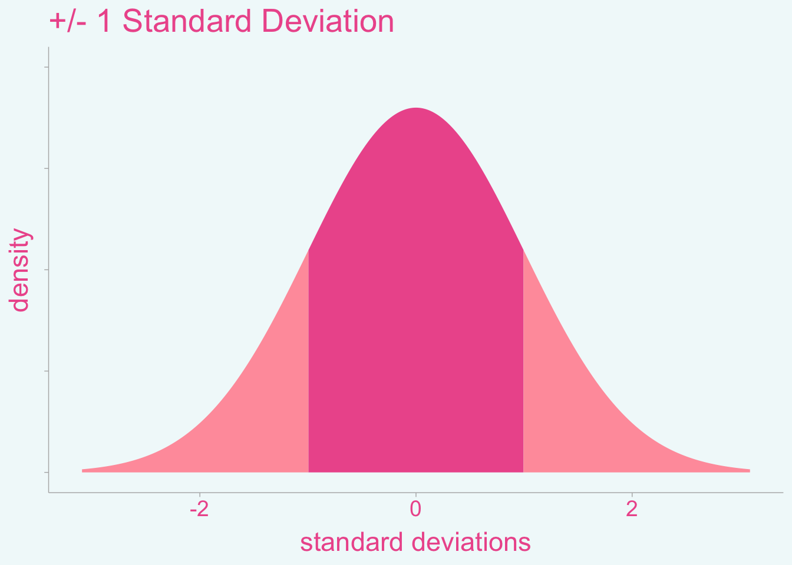
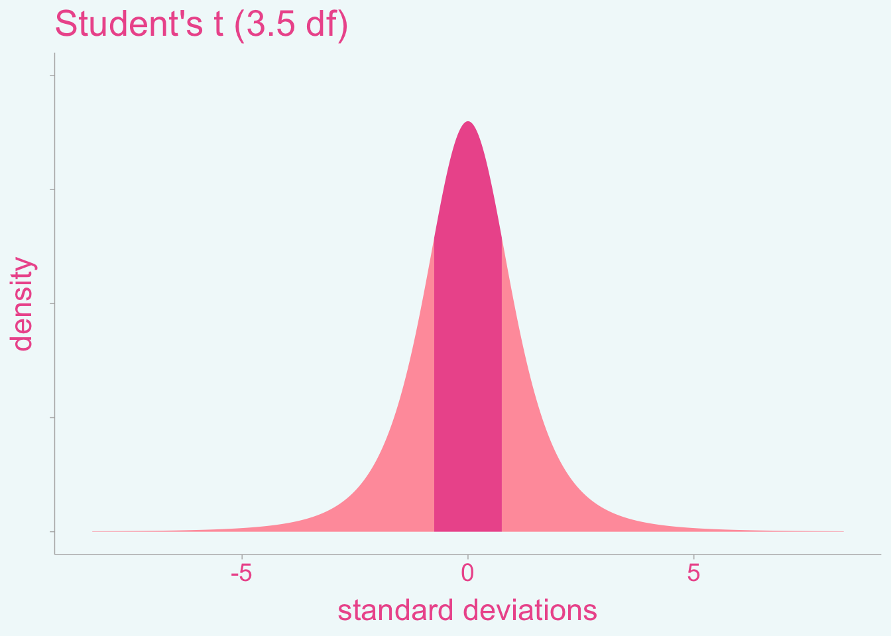

Approximating Standard Deviation from Inter-Quantile Range
standard deviations
approximations
Occasionally researchers report inter-quantile ranges (e.g., inter-quartile range) to measure the spread of the data. Since meta-analysts need standard deviations to calculate effect size estimates, here is a strategy to approximate them from an inter-quantile range.
Inter-Quantile Range
Studies may report inter-quantile ranges in order to communicate the spread of the data. However, meta-analysts will need standard deviations (SD) to calculate effect size estimates such as standardized mean differences (i.e., Cohen’s \(d\)). For this post, we will focus on the inter-quartile range (IQR) although the method described here will apply to any range between a pair of quantiles. The IQR (\(X_{(75-25)}\)) is defined as the difference between the 75th and 25th quantile values, that is, the region where 50% of the data lies. We can visualize what this will look like with normally distributed data:
Now let’s compare the range of values covered by +/- 1 SDs of a normal distribution:

The range covered by \(\pm 1\) SD covers a considerably larger range of values than the IQR.
Step 2: Convert IQR to Standard Deviations
The quantile function (\(\phi^{-1}\)) of the standard normal distribution (i.e., mean=0, SD=1) converts quantiles of the cumulative density function into the corresponding values in standard deviation units. The difference between the corresponding values will give us the IQR in SD units,
\[ S_{(75-25)} = \phi^{-1}(.75) - \phi^{-1}(.25) \] The resulting value is \(S_{(75-25)}=1.34898\). It is important to note that this formulation can be used for any set of quantiles not just IQR, therefore we can generalized this to compare any arbitrary pair of quantiles (\(Q1,Q2\)),
\[ S_{(Q_2-Q_1)} = \phi^{-1}(Q_2) - \phi^{-1}(Q_1) \]
Now that we have the IQR in terms of SD units, we can divide with the raw IQR to obtain an estimate of the SD of \(X\) (\(S_X\)),
\[ S_X = \frac{X_{(75-25)}}{S_{(75-25)}} = \frac{X_{(75-25)}}{1.34898} \]
# Define IQR
X_25 <- 30
X_75 <- 50
X_75_25 <- X_75 - X_25
# Compute IQR in SDs
S_75_25 <- qnorm(.75) - qnorm(.25)
# Estimate standard deviation
S_X <- X_75_25 / S_75_25
#print results
print(S_X)[1] 14.82602Note the Assumptions!
Since this method provides an approximation of a normal distribution it is important to point out that the method may be biased under different distributions. For example, if we try the same method on a Student’s t distribution with heavy tails (3.5 degrees of freedom), \(S_{(75-25)}\) would be equal to 1.50187 which is slightly larger than 1.34898 that we computed from the normal distribution. If we were to assume a normal distribution when it was truly a student’s t, the method would over-estimate the standard deviation by ~11%.

Applying it to simulated data
Lets see how it performs in simulated sample of normally distributed data… Close enough!!
# Set seed
set.seed(343)
# Simulate normal data (Mean = 10, SD = 5)
X = rnorm(100,10,5)
# Define IQR
q25 <- as.numeric(quantile(X,.25))
q75 <- as.numeric(quantile(X,.75))
X_75_25 <- q75 - q25
# Compute IQR in SD units
S_75_25 <- qnorm(.75) - qnorm(.25)
# Estimate standard deviation
S_X <- X_75_25 / S_75_25
# Print results
print(S_X)[1] 4.706901